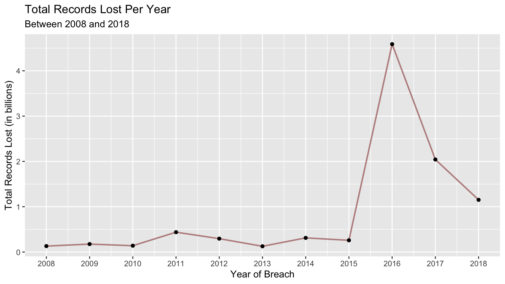

Data breaches affect millions of people every year, and “breaches and cyberattacks continue to escalate”1. Consumers are accustomed to reading about data breaches online, and “they tend to either accept or ignore them”2. This analysis shows more information on data breaches in the past 10 years between 2008 and 2018 to shed light on why consumers should pay attention to breaches that most likely affect them. The analysis only looks at data breaches in companies based in the United States, which includes the District of Columbia and U.S. territories. The data includes the year the breach occurred and the date the breach was made public. This analysis uses the date of the breach as it paints a better picture as to when the personal records were compromised.
breach <- read.csv("breach_database.csv")
states <- read.csv("us_states.csv")
state <- read.csv("us_list.csv")
states_data <- states %>%
clean_names() %>%
# Change from factor to character to join (factors had different levels)
mutate(state_chr = as.character(state)) %>%
select(state_chr)
# Organize data: clean column names, select necessary columns, and filter
# Focusing on a 10-year period (2008-2018)
# 2019 Excluded because data through all of December not available yet
breach_data <- breach %>%
clean_names() %>%
select("company", "state", "type_of_breach", "type_of_organization",
"total_records","year_of_breach") %>%
filter(year_of_breach <= 2018 & year_of_breach >= 2008) %>%
filter(total_records != "" | total_records != 0) %>%
filter(state != "") %>%
# Change from factor to character to join (factors had different levels)
mutate(state_chr = as.character(state)) %>%
# Join with U.S. state & territory data to exclude international data breaches
# Includes District of Columbia
inner_join(states_data, by="state_chr")The graph shows a significant spike in the total records affected between 2016 and 2018, which means that consumers should pay attention to whether their data has been compromised. Organizations should also do a better job at informing and guiding their customers while also trying to improve their security measures. The increased number of records could be the result of more data breaches or some data breaches that affected a significantly larger number of records. The “More info” tab further explores what caused the spike in affected records as well as the causes and types of breaches.
# Records lost over the years, focus on 2008-2018
options(scipen=999)
breach_time <- breach_data %>%
group_by(year_of_breach) %>%
summarize(total_records_year = sum(total_records)) %>%
mutate(total_records_billions = total_records_year/1000000000)
ggplot(breach_time, aes(year_of_breach, total_records_billions)) +
geom_line(color = "rosybrown", size =.8) +labs(title = "Total Records Lost Per Year",
subtitle = "Between 2008 and 2018",
x ="Year of Breach",
y = "Total Records Lost (in billions)") +
scale_x_continuous(breaks= seq(2008, 2018, by=1)) + geom_point(size = 1.5) +
scale_color_manual(values=c('red'))
USA Today. “Your data was probably stolen in cyberattack in 2018- and you should care”. https://www.usatoday.com/story/money/2018/12/28/data-breaches-2018-billions-hit-growing-number-cyberattacks/2413411002/↩
USA Today. “Your data was probably stolen in cyberattack in 2018- and you should care”. https://www.usatoday.com/story/money/2018/12/28/data-breaches-2018-billions-hit-growing-number-cyberattacks/2413411002/↩